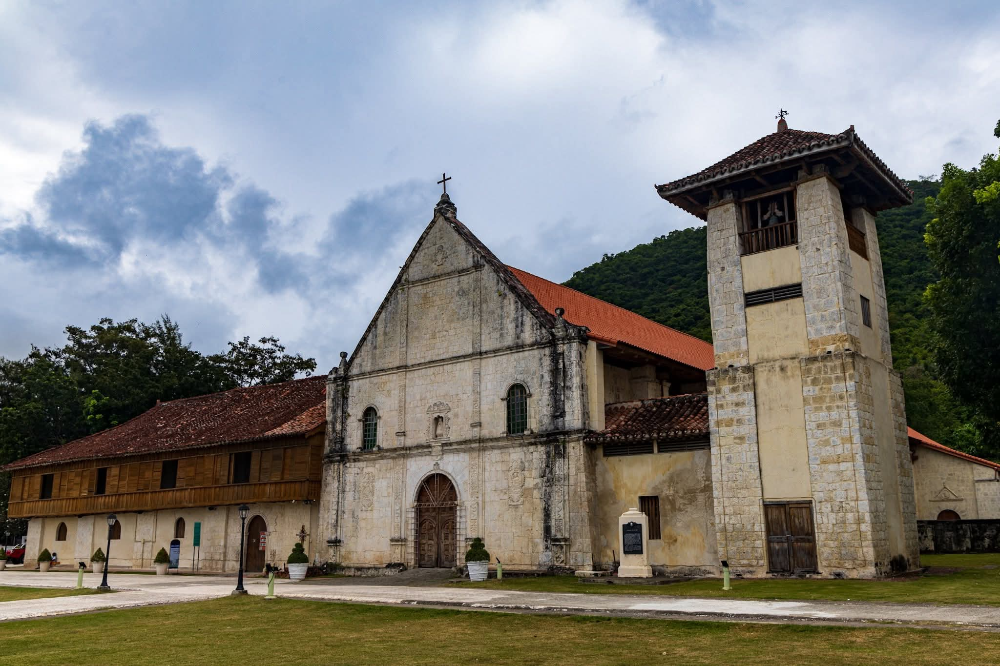
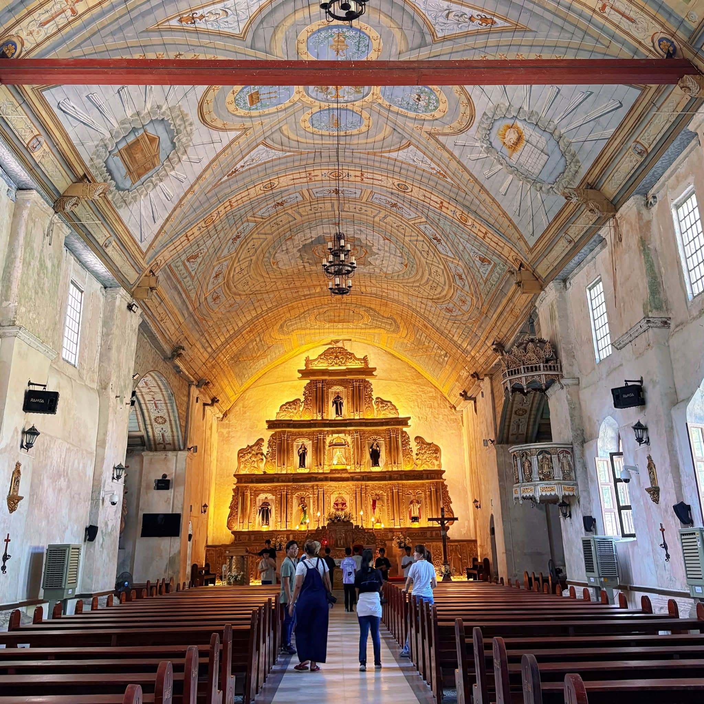
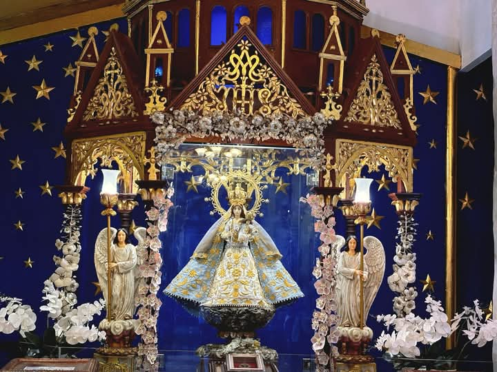
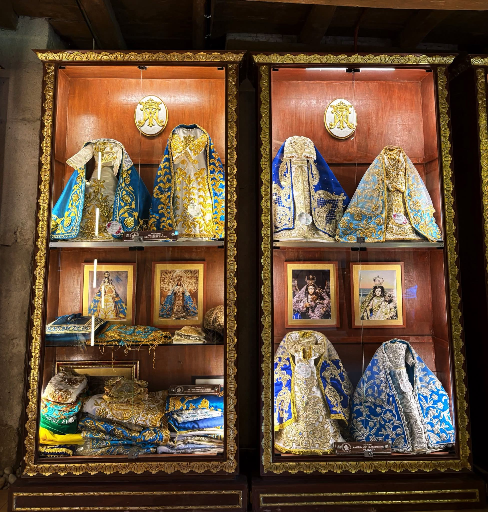
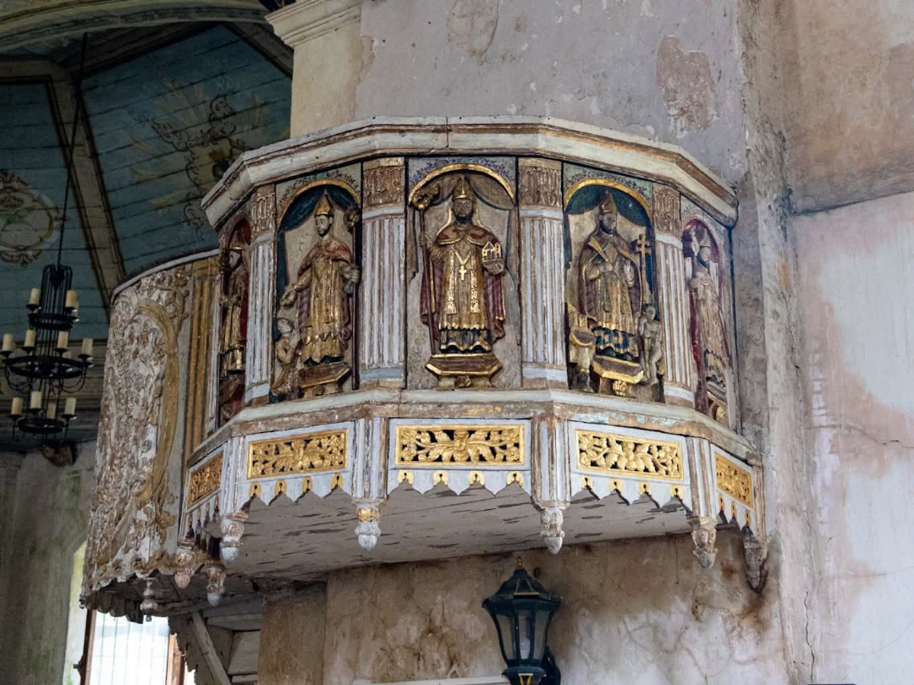
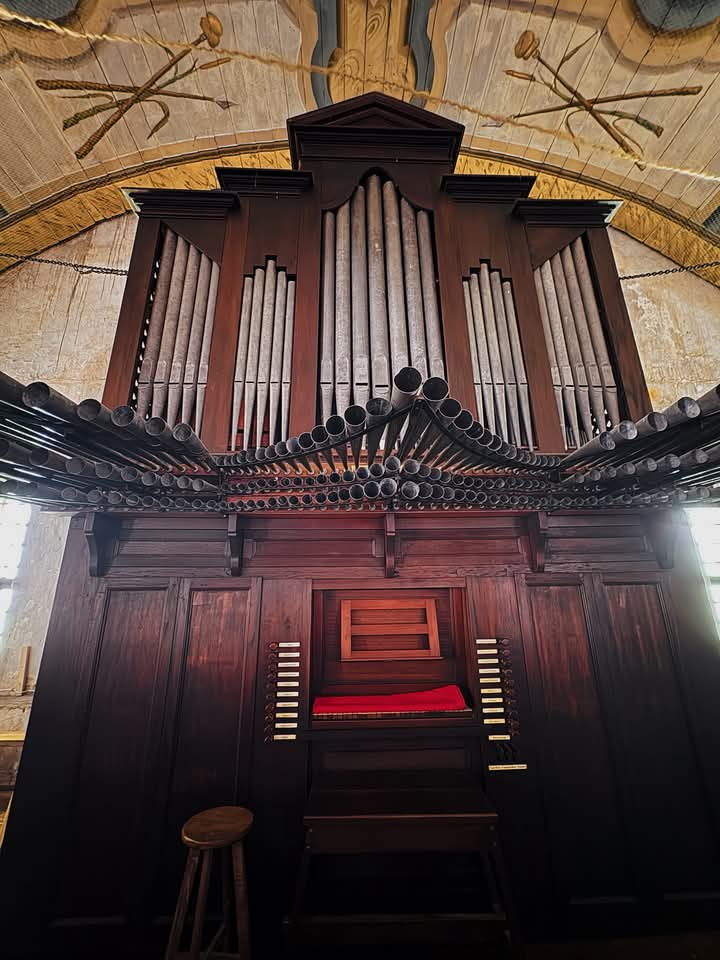
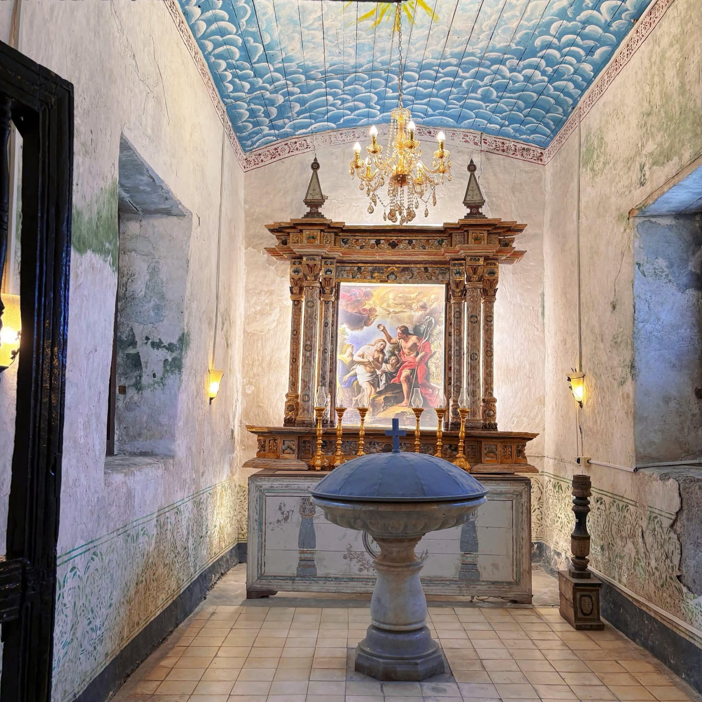
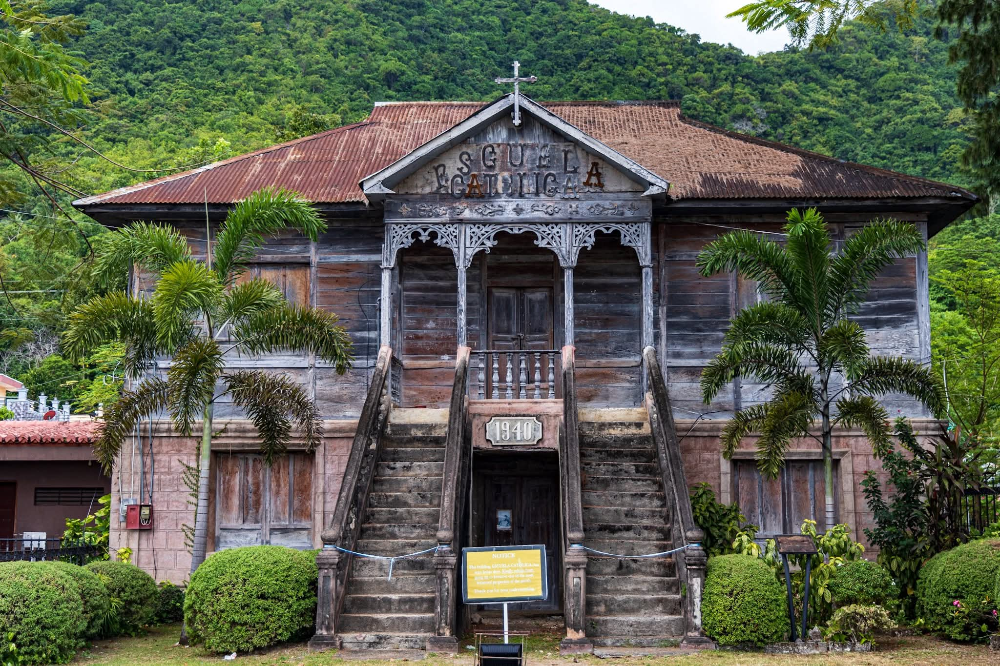
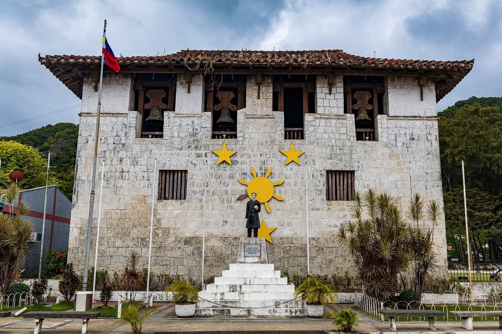

Discover Cebu’s timeless heritage
Explore the sacred landmarks and centuries-old artifacts of this heritage church

Founded in 1599 by Augustinian missionaries, this coral-stone church doubled as a fortress against pirate raids. Declared a National Cultural Treasure in 1999, it remains a testament to Cebu’s colonial past.

Featuring 3-meter-thick walls, a bell tower-watchtower hybrid, and hand-carved woodwork. Restored murals depict biblical scenes painted by local artisans in the early 1900s.

The 16th-century image of Nuestra Señora Patrocinio de Maria Santisima is adorned with silver regalia. Its feast day on September 8 draws thousands of pilgrims yearly.

These are intricately embroidered silk and gold-thread gowns used to clothe the miraculous 400-year-old ivory image of the patroness.

The Boljoon pulpit panels are 19th-century tindalo wood carvings depicting Augustinian saints that were recently returned to their home in Cebu after being missing for over three decades.

The pipe organ of the Patrocinio de Maria Parish Church in Boljoon, Cebu, is a fully functional Spanish colonial instrument built around 1880 and restored in 2018 by Diego Cera Organ Builders.

This centuries-old room is a designated space for the sacrament of baptism, which, in the Roman Catholic tradition, signifies an individual becoming a member of the faith.

The Escuela Catolica is a 1940s heritage landmark in Boljoon, Cebu, distinguished by its iconic twin staircases and its history as a religious school and dormitory.

The El Gran Baluarte holds a unique history that goes beyond its role as a fortress, particularly through its "prison art" and the leadership of its builder.